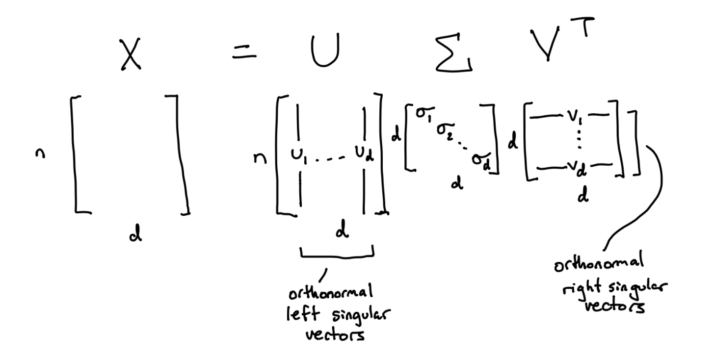
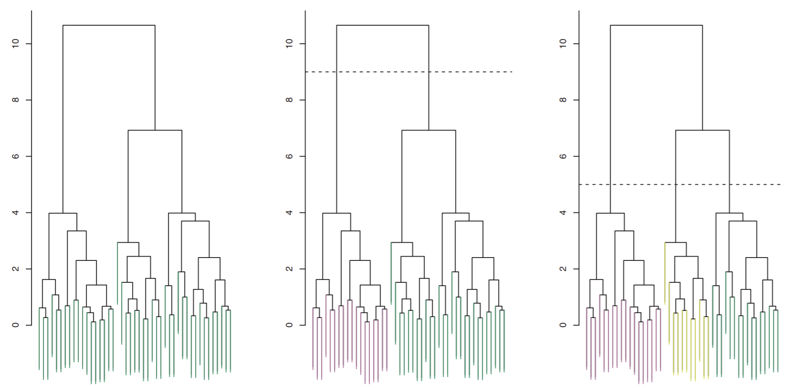

Singular Value Decomposition and Clustering¶
So we know that computing the eigenvectors of \(X^TX\) for a given (centered) design matrix \(X\) is one of the steps in PCA. However, there are two problems with doing it this way:
computing \(X^TX\) in general takes \(\Theta(nd^2)\) time.
\(X^TX\) is poorly conditioned: the ratio between \(\lambda_1\) and \(\lambda_d\) (smallest and largest eigenvalues) is very large. This means it has numerically inaccurate eigenvectors.
So instead of calculating \(X^TX\), we can instead calculate the singular value decomposition of \(X\), which fixes both of these problems.
Singular Value Decomposition¶
In earlier chapters, we learned the eigendecomposition of a square, symmetric matrix: \(A = V\nabla V^T\). In practice, however, our matrices are usually not symmetric, and \(V\) is not orthogonal: thus, \(V^{-1} \neq V^T\). and \(A\) doesn’t eigendecompose nearly as nicely. Even worse, if our matrix is non-square, it doesn’t have eigenvectors at all.
Fortunately, the SVD applies to all matrices, even if they are nonsymmetric or non-square.
Definition 16 (SVD)
A singular value decomposition \(X = U \Sigma V^T\) always exists for \(X \in \mathbb{R}^{n \times d}\) where \(n \ge d\). Columns of \(U\) are called left singular vectors, denoted as \(u_i\). Rows of \(V^T\), or columns of \(V\), are called right singular vectors, denoted as \(v_i\). \(\Sigma\) is a diagonal matrix where diagonal elements \(\sigma_i\) are nonnegative singular values of \(X\).
Here’s a diagram to visualize the SVD.
{kind=link}
Some important properties to note about the SVD:
We can represent the SVD of \(X\) as a sum of \(d\) rank-1 matrices: \(X = U \Sigma V^T = \sum_{i=1}^{d}\sigma_iu_iv_i\)
Right singular vectors are mutually orthogonal, as are left singular vectors.
Some \(\sigma_i\) might be zero; the number of nonzero singular values is equal to \(\text{rank}(X)\).
If points in centered \(X\) all lie on a line (1 dimension), there is only one nonzero singular value.
If points in \(X\) span a subspace with \(r\) dimensions, we have \(r\) nonzero singular values.
If \(n < d\), the SVD of \(X\) will have a square \(U\) but a non-square \(V\).
So now just like PCA, we can get eigenvectors of \(X^TX\) easily from the SVD: \(v_i\) (row \(i\) of \(V^T\)) is an eigenvector of \(X^TX\) with eigenvalue \(\sigma_i^2\).
The proof for this is very simple:
Proof. \(X^TX = (U \Sigma V^T)^T(U \Sigma V^T) = V^T \Sigma U^TU \Sigma V^T = V \Sigma^2 V^T\)
Since \(V \Sigma^2V^T\) is an eigendecomposition of \(X^TX\), we know that \(v_i\) is an eigenvector, and \(\sigma_i^2\) is the corresponding eigenvalue.
So now we know how to get eigenvalues + eigenvectors of \(X^TX\) from an SVD! Rows of \(V^T\), and squared elements of \(S\).
Note
Calculating the SVD is more numerically stable than calculating \(X^TX\): ratios between singular values \(<\) ratios between eigenvalues. If \(n < d\), \(V\) won’t have contain eigenvectors with eigenvalue 0, but those are useless for PCA anyway.
So what about the time speedup we were supposed to get from SVD? We can calculate the SVD in \(O(ndk)\) time, which means we can calculate our \(k\) largest singular values/vectors in \(O(ndk)\) time. This means that unlike when calculating \(X^TX\), we don’t need to compute all singular values/vectors: only the ones we need.
Note
Even faster algorithms have been found for calculating SVDs: some up to \(O(nd\log k)\) runtime!
The SVD also gives us a way to calculate the principal coordinates of a sample point, or the coordinates of \(X_i\) in PC-space:
Theorem 17 (SVD Principal Coordinates)
Row \(i\) of \(U \Sigma\) gives the principal coordinates of sample point \(X_i\). In other words, \(X_i \cdot v_j = \sigma_j U_{ij}\) for all \(j\).
On the other hand, column \(i\) of \(U \Sigma\) is the \(i\)-th principal component. So unlike standard PCA where we have to explicitly calculate \(X_i \cdot v_j\) for all \(j\) (all eigenvectors) explicitly, we no longer have to do so with SVD! The SVD has already done it for us. In essence, \(XV = U\Sigma\). Try to prove this yourself: it’s not a hard proof at all.
Clustering¶
In clustering, we want to partition data into groups, or clusters, such that points in a cluster are more similar to each other than points in other clusters.
Clustering has many practical applications:
Discovery: Netflix + Spotify recommendations
Hierarchy: Given a set of genes from various species, find a good taxonomy
Quantization: Data compression through reducing choices
Graph Partitioning: image segmentation, finding groups in social networks
There exist many algorithms for clustering a dataset. Let’s run through some.
K-Means¶
Let’s begin with the k-means algorithm. Given \(n\) points, the big idea is to partition those points into \(k\) distinct clusters. Formally, we are assign each datapoint \(X_i\) a cluster label \(y_i \in [1,k]\).
For each iteration, we want to calculate the cluster mean \(\mu_i\) as simply the mean of all points in that cluster.
Now here’s the objective function. We want to find cluster label assignments \(y\) such that
In other words, we want to minimize the sum of squared distances from points to their cluster means.
This is an NP-hard problem. We can simply try every partition: in this case, we can solve in \(O(nk^n)\) time. But this is way too slow. So instead, we try a heuristic called k-means. In k-means, we are doing alternating minimization: minimizing our objective function by changing means \(\mu_i\) AND changing the \(y\) at each iteration.
At each iteration:
\(y_j\)’s are fixed. We update \(\mu_i\).
\(mu_i\)’s are fixed. We update \(y_j\).
Repeat until \(y\) no longer changes after each iteration.
Given a fixed assignment \(y\), we can use calculus to show the optimal \(\mu_i\) is simply \(\mu_i = \frac{1}{n_i}\sum_{y_j = i}X_j\): the average of all points in cluster \(i\). On the other hand, given a fixed set of cluster means \(\mu\), we simply assign each sample point to the (new) nearest cluster mean. In the case where a point has equal distance to multiple cluster means, the default rule is to stay in the current cluster it’s already in (or pick arbitrarily if new).
Unfortunately, this algorithm does not guarantee a convergence to the optimal \((\mu, y)\).
Note that both steps 1, 2 will always decrease the objective function, unless nothing changes (then we halt). This means that our algorithm will never revert to a previous state assignment. Since there are only a finite number of clustering assignments, we know the k-means algorithm must terminate. The k-means algorithm is usually very fast in practice, but also finds a local, not global, minimum.
How does the k-means algorithm initialize, though? There are multiple ways:
Forgy method: choose \(k\) random sample points as starting \(\mu_i\)’s
Random Partition: assign each sample point a random cluster label
k-means++: Some other advanced shit
The outcome of k-means is actually heavily dependent on the initialization. So to get the best results, it is best to run k-means multiple times with different random starts.
It turns out that minimizing the objective function is equivalent to finding \(y\) that minimizes the within-cluster variation:
So for each cluster, we calculate the total pairwise distance between points in that cluster and sum them all up, then divide by the number of points in that cluster. We sum this total for each cluster.
The important part about within-cluster variance is that now the objective function’s inputs are simply data points and their cluster label assignments.
Do we normalize the data before applying k-means? Like PCA, it is dependent on whether features have different units of measurement.
K-Medioids¶
What if we have points where we don’t want to use the Euclidean norm (Euclidean distance) and means?
Another alternative algorithm for clustering is the k-medioids algorithm. This will allow us to use other distance metrics \(d(x,y)\)- called the dissimilarity function. There are a lot of options for what you can choose for \(d\), but ideally, they satisfy the triangle inequality \(d(x,y) \le d(x,z) + d(z,y)\).
When would we not want Euclidean distance as a measure of dissimilarity? Suppose you run a store, and have a database that tells you how many of each product each customer bought. You want to cluster together customers who buy similar products and do market analysis on these clusters. However, Euclidean distance won’t be good here: we will get a massive cluster of customers who only bought one thing. Instead, it makes more sense to treat each customer as a vector, and use the angle between customers as a dissimilarity function. If this angle is large, there is a large dissimilarity.
So how does this change the algorithm? Instead of calculating cluster means, we are now calculating cluster medians, which will always be one of the data points in that cluster. And now instead of choosing a cluster for a point based on the closest cluster mean, we now choose based on the closest cluster median.
Hierarchical Clustering¶
One issue with k-means and k-medioids is we must choose \(k\) beforehand, and there isn’t really a reliable mathematical way to do this other than eyeball it. This next method, hierarchical clustering, is one of many clustering algorithms that tries to do this for you.
Essentially, in hierarchical clustering, what we do is create a tree of all datapoints, where every subtree represents a cluster. So some clusters will contain smaller clusters.
There are two ways of doing this:
Agglomerative clustering: bottom-up clustering. We start with each point in a cluster, and at each iteration fuse 2 clusters into one.
Divisive clustering: top-down clustering. We start with all points in a giant cluster, and repeatedly split at each iteration.
Note
When the input is a point set, agglomerative clustering is more. But when the input is a graph, divisive clustering is more common.
So now, instead of measuring distance between two points, we are measuring distance between two clusters. There are four options for this:
Complete Linkage: \(d(A, B) = \max\{d(w, x) : w \in A, x \in B\}\)
Single Linkage: \(d(A, B) = \min\{d(w, x) : w \in A, x \in B\}\)
Average Linkage: \(d(A, B) = \frac{1}{|A||B|}\sum_{w \in A}\sum_{x \in b}d(w,x)\)
Centroid Linkage: \(d(A,B) = d(\mu_A, \mu_B)\)
Note
Note complete, single, and average linkage will work for any pointwise distance function \(d\), while centroid linkage really only makes sense for Euclidean distance. There does exist a variation of the centroid linkage that uses the medoids instead of the means, and medoids are defined for any distance function. Moreover, medoids are more robust to outliers than means.
So in greedy agglomerative clustering, we are just repeatedly fusing the two clusters that minimize \(d(A,B)\). Naively, we would search through every cluster pair at each iteration, which would take \(O(n^3)\) time.
A dendogram is a diagram of the tree in a cluster hierarchy in which the vertical axis encodes all linkage distances \(d(A,B)\). Take a look at the example dendogram below:
{kind=link}
You can see by making a horizontal line, we can split our dendogram into an arbitrary number of clusters. The lower the line, the more (finely-cut) clusters we get.
In most applications, we probably want to use average or complete linkage. Some things to note:
Single linkage is very sensitive to outliers, and tends to give a very unbalanced tree
Complete linkage tends to be the best-balanced: as a cluster gets large, the furthest point in the cluster is already far away. So large clusters are more resistant to grow more than smaller ones.
Note that all these clustering algorithms we’ve gone over are unstable: deleting a few input points can sometimes give very di↵erent results. Despite this, these are still very commonly used in practice today. And it’s not clear to me whether a truly stable clustering algorithm is even possible.